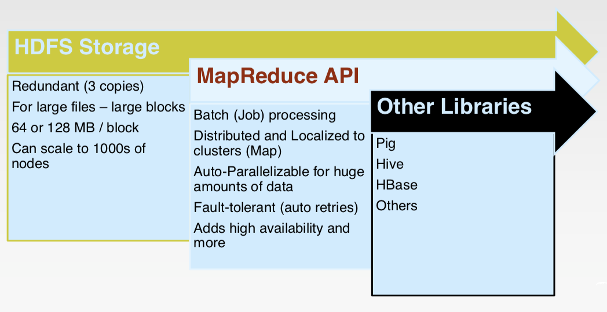
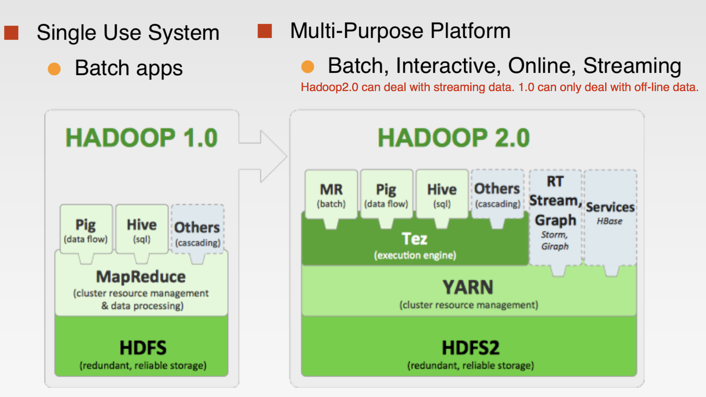
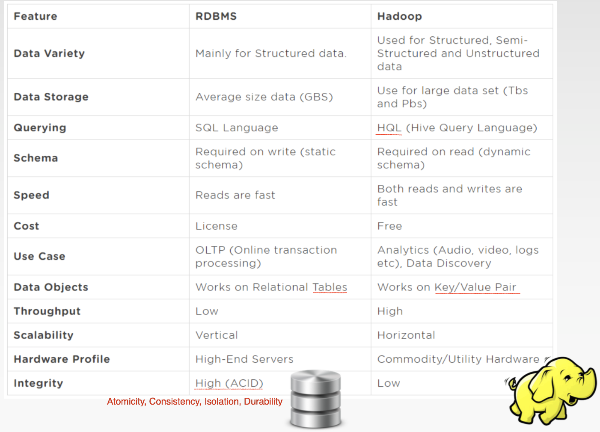
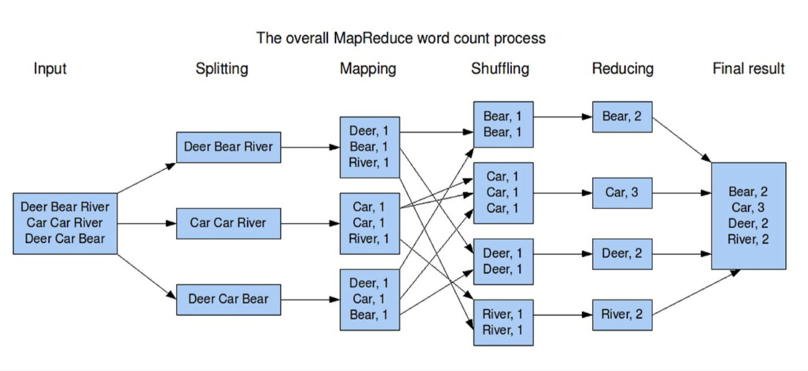

本周主要内容：
- What is big data?
- Big data characteristics
- Introduction to big data tools
What is Big Data?
No standard definition!
Here are from Wikipedia:
- Big data is a term for data sets that are so voluminous or complex that traditional data processing application software are inadequate(不足的) to deal with them.
- Challenges include capture, storage, analysis, data curation（综合处理）, search, sharing, transfer, visualization, querying, updating and information privacy.
- The term “big data” often refers simply to the use of predictive analytics, user behaviour analytics, or certain other advanced data analytics methods that extract value from data, and seldom to a particular size of data set
- Analysis of data sets can find new correlations to “spot business trends, prevent diseases, combat crime and so on.”
Big Data Characteristics
3V
- Volume:
- Growth 40% per year
- increasing exponentially（指数的)
- Velocity(Speed):
- Data is being generated fast and need to be processed fast
- Online Data Analytics
- Late decisions -> missing opportunities
- Variety
6V
-
Volume:
In a big data environment, the amounts of data collected and processed are much larger than those stored in typical relational databases.
-
Variety:
Big data consists of a rich variety of data types.
-
Velocity:
Big data arrives to the organization at high speeds and from
multiple sources simultaneously. -
Veracity:
Data quality issues are particularly challenging in a big data context.
-
Visibility/Visualization:
After big data being processed, we need a way of presenting the data in a manner that’s readable and accessible.
- Visibility: the state of being able to see or be seen is implied.
- Visualization: Making all that vast amount of data comprehensible in a manner that is easy to understand and read.
-
Value:
Ultimately, big data is meaningless if it does not provide value toward some meaningful goal.
Introduction to big data tools
Hadoop
What is Hadoop?
-
Open-source data storage and processing platform
-
Massively scalable, automatically parallelizable
Based on work from Google:
- Google: GFS + MapReduce + BigTable (Not open)
- Hadoop: HDFS + Hadoop MapReduce + HBase (opensource)
-
Hadoop offers:
- Redundant, Fault-tolerant data storage
- Parallel computation framework
- Job coordination
So we do not need to worry about:
- Where file is located?
- How to handle failures & data lost?
- How to dividencomputation?
- How to program for scaling?
Why use Hadoop?
-
Cheaper: Scales to Petabytes or more easily
-
Faster: Parallel data processing
-
Better: Suited for particular types of big data problems
Hadoop distribution
- Data storage (HDFS)
- Runs on commodity hardware (usually Linux)
- Horizontally scalable
- Processing (MapReduce)
- Parallelized (scalable) processing
- Fault Tolerant
- Other Tools / Frameworks
- Data Access: HBase, Hive, Pig, Mahout
- Tools: Hue, Sqoop
- Monitoring: Greenplum, Cloudera
HDFS（Hadoop Distributed File System）：
Hadoop分布式文件系统(HDFS)被设计成适合运行在通用硬件(commodity hardware)上的分布式文件系统。它和现有的分布式文件系统有很多共同点。但同时，它和其他的分布式文件系统的区别也是很明显的。HDFS是一个高度容错性的系统，适合部署在廉价的机器上。HDFS能提供高吞吐量的数据访问，非常适合大规模数据集上的应用。HDFS放宽了一部分POSIX约束，来实现流式读取文件系统数据的目的。HDFS在最开始是作为Apache Nutch搜索引擎项目的基础架构而开发的。HDFS是Apache Hadoop Core项目的一部分。
MapReduce：
Hadoop Map/Reduce是一个使用简易的软件框架，基于它写出来的应用程序能够运行在由上千个商用机器组成的大型集群上，并以一种可靠容错的方式并行处理上T级别的数据集。
一个Map/Reduce 作业（job） 通常会把输入的数据集切分为若干独立的数据块，由 map任务（task）以完全并行的方式处理它们。框架会对map的输出先进行排序， 然后把结果输入给reduce任务。通常作业的输入和输出都会被存储在文件系统中。 整个框架负责任务的调度和监控，以及重新执行已经失败的任务。
通常，Map/Reduce框架和分布式文件系统是运行在一组相同的节点上的，也就是说，计算节点和存储节点通常在一起。这种配置允许框架在那些已经存好数据的节点上高效地调度任务，这可以使整个集群的网络带宽被非常高效地利用）

Hadoop 1.0 vs. Hadoop 2.0

RDBMS vs. Hadoop

MapReduce
Typical big data problem:
- Iterate over a large number of records
- Extract something of interest from each
- Shuffle and sort intermediate results
- Aggregate intermediate results
- Generate final output
Programmers specify two functions:
- map (k1, v1) → [<k2, v2>]
- reduce (k2, [v2]) → [<k3, v3>]
Example: WordCount

Spark
- Open-source engine for large-scale data processing
- Supports generalized dataflows
- Written in Scala, with bindings in Java and Python
- Fast and expressive cluster computing system interoperable with Apache Hadoop
Spark is not
- a modified version of Hadoop
- dependent on Hadoop because it has its own cluster management
- Spark uses Hadoop for storage purpose only
AWS
AWS(Amazon Web Services) is a subsidiary of Amazon.com, which offers a suite of cloud computing services that make up an on-demand computing platform.